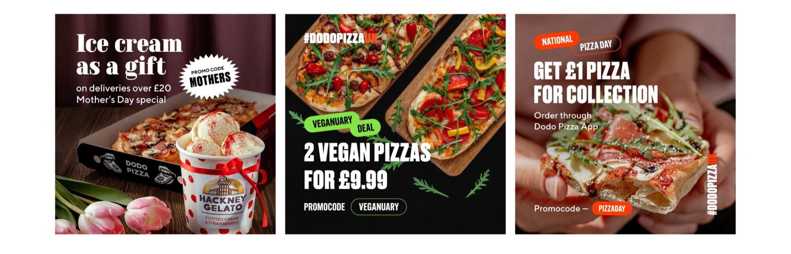
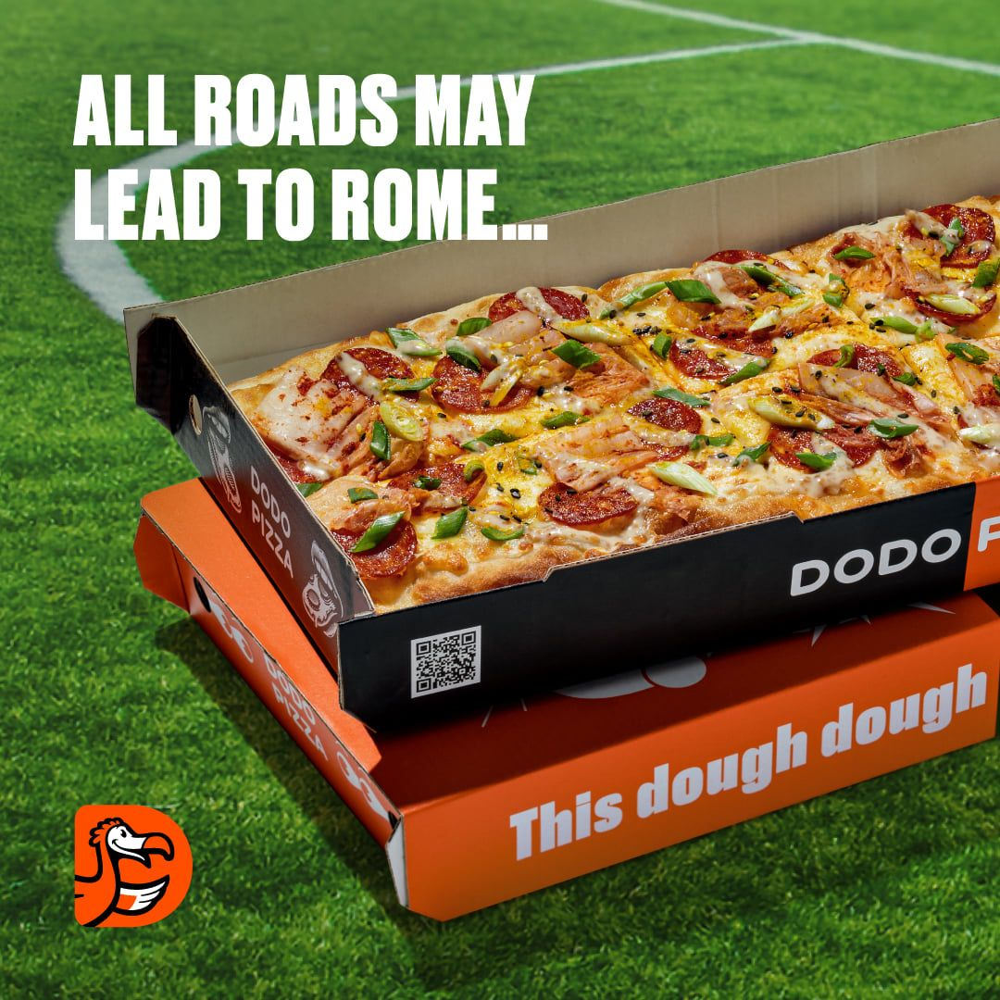
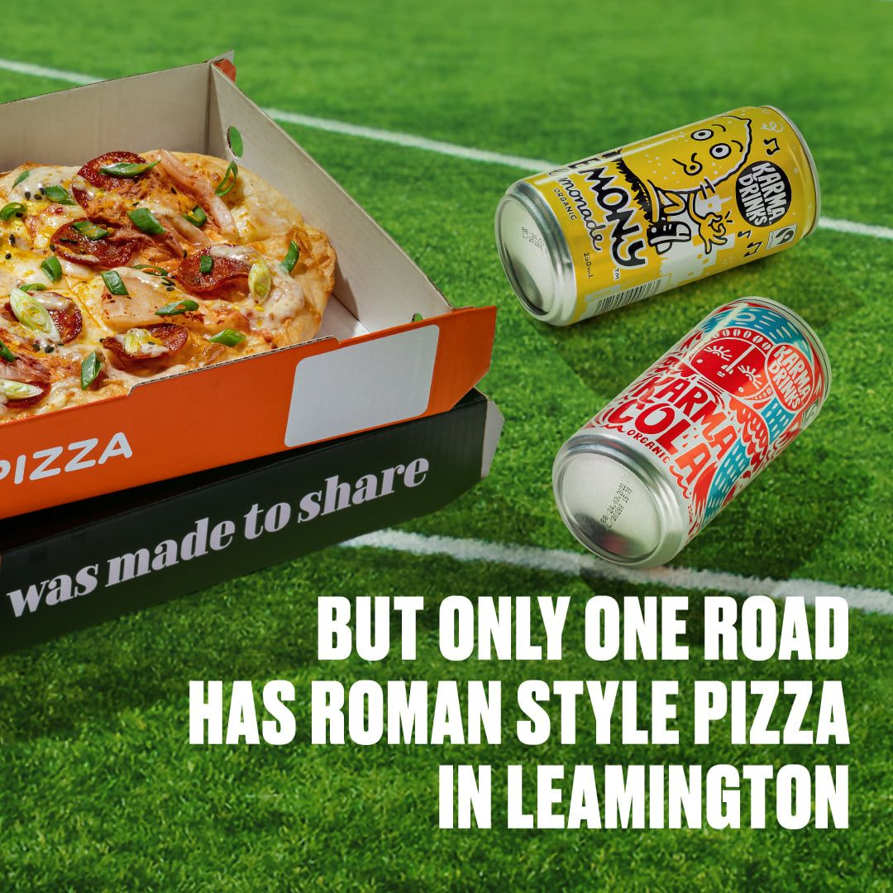
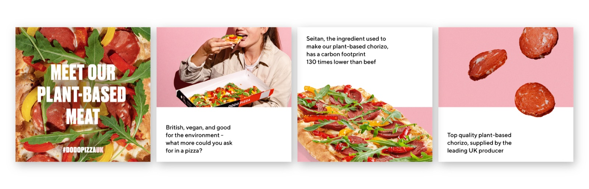
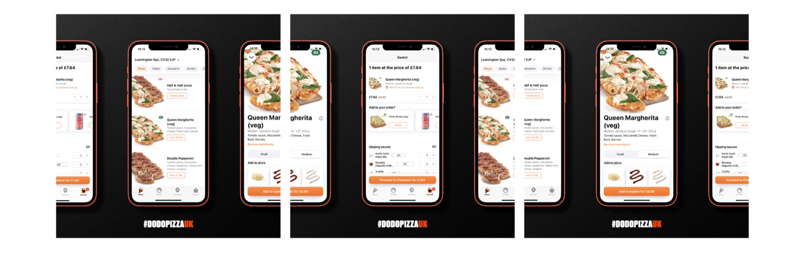
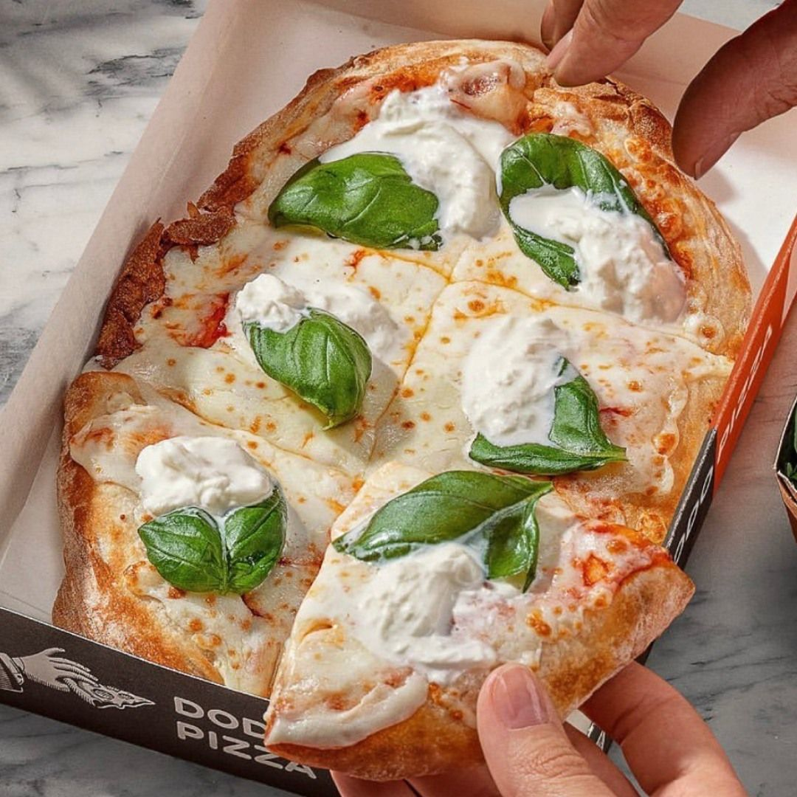
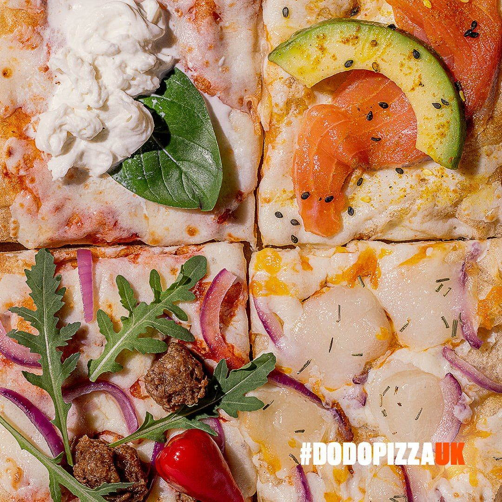
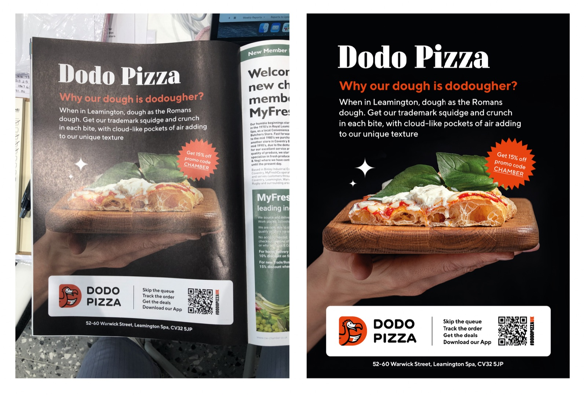

As the creative designer for Dodo Pizza, I was responsible for the full cycle of visual content development and production across digital platforms. The goal was to create engaging, mouth-watering, and brand-consistent content for Instagram, TikTok, and targeted advertising.

01
Research & Concept Development
- Analyzed Dodo Pizza’s brand identity, tone of voice, and core values.
- Conducted research on the target audience, competitors’ content strategies, local trends, and user behavior.
- Developed a creative concept focused on playfulness, engagement, and appetizing visuals that aligned with the brand’s spirit.


02
Pre-Production & Planning
- Created detailed moodboards, references, and platform-specific scripts and storyboards.
- Organized the entire production process, including location scouting (kitchens, pizzerias), sourcing props and models, and assembling the production team.
- Managed logistics and scheduling to ensure smooth execution within time and budget constraints.

03
Content Production
- Oversaw the shoot, focusing on visual composition, food styling, and brand alignment.
- Produced video content for Reels and TikTok, as well as photos and animated assets for posts and stories.
- Ensured that each piece of content conveyed the Dodo brand’s energy and made the audience crave the product.

04
Platform Adaptation
- Edited and formatted videos specifically for TikTok and Instagram Reels.
- Designed targeted ad creatives, including carousels, banners, and story ads.
- Exported all content in accordance with platform-specific technical requirements (resolutions, lengths, formats).


05
Visual Support for Marketing Activities
- Created graphics for promotions, special offers, and collaborations.
- Developed reusable templates that could be scaled and customized for different cities and audiences.
- Collaborated with Dodo Pizza’s marketing team to evaluate content performance and iterate based on feedback and analytics.

This project was a great opportunity to combine creative thinking, production management, and a deep understanding of brand-driven marketing. The final content stayed true to Dodo Pizza’s DNA while driving high engagement and positive audience feedback.